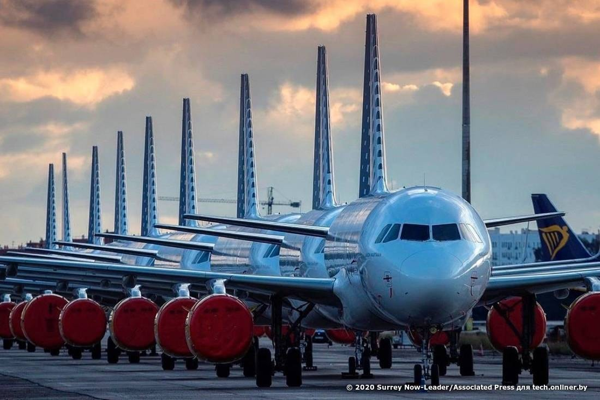

31 октября 2020 в 8:00
Автор: Станислав Иванейко. Фото: foxbusiness.com
$300 тыс. в минуту — столько составляют расходы авиационной индустрии в нынешнем полугодии. Это почти $13 млрд в месяц, или $77 млрд за полгода. Всего же за непростой 2020 год на поддержку авиационной индустрии уйдет $160 млрд. Конечно, в масштабах отрасли цифры с девятью нулями — обычное дело: один лишь дальнемагистральный лайнер стоит пару сотен миллионов. В то же время другая статистика заставляет задуматься над фаталистичным тоном экспертов: например, за этот год обанкротились 43 коммерческие авиакомпании. Кажется много? Как бы не так: в 2019 году закрылись 46 перевозчиков, в 2018-м — 56. И никакого коронавируса не было. Однако нынешний кризис все же отличается, и вот почему.
Сфера туризма и сопутствующие индустрии — пассажирские перевозки, гостиничный бизнес, общепит — пострадали от COVID-19 одними из первых, причем особенно сильно. Но если помочь тем же ресторанам большой проблемы нет (не требуются заоблачные размеры льгот и субсидий), то с авиацией все гораздо сложнее: денег им нужно, мягко говоря, больше. Государства разными способами поддержали своих перевозчиков: срезали налоговую нагрузку, перечисляли деньги в чистом виде и делали все, чтобы авиакомпании смогли продержаться карантинные месяцы.
Выстояли не все: 43 авиакомпании уже полностью прекратили деятельность из-за финансовых проблем. Опять же за прошлый год в небытие канули 46 авиакомпаний, и можно подумать, что ничего экстраординарного не случилось. Однако есть несколько ключевых отличий.
Во-первых, раньше финансовой помощи от государств не было. Перевозчики закрывались по естественным причинам: слабая бизнес-модель, пошатнувшаяся репутация, вытеснение конкурентами. Здесь же компании погибали даже при серьезной помощи от правительств, и без нее жертв оказалось бы гораздо больше.
Во-вторых, кризис не выдержали довольно крупные перевозчики, что раньше встречалось редко. Так, 20 из 43 обанкротившихся компаний в этом году имели численность флота 10 и более самолетов. За прошлый год таких компаний оказалось лишь 12 из 46.
В-третьих, худшее еще впереди: обычно авиаперевозчики заявляют о банкротстве к концу календарного года. Традиционно это наиболее тяжелое для них время: второй и третий кварталы прибыльны благодаря отпускным сезонам, когда пассажиропоток огромный. А дальше начинаются проблемы: нужно как-то пережить осень и зиму. Не всем это удавалось даже в спокойные годы, и едва ли коронавирусный 2020-й будет для них легче. Этим же, к слову, и объясняется столь бедственное положение многих перевозчиков минувшей весной: финансовая подушка за зиму и так прохудилась, а вместо начала сезона путешествий, чтобы снова улучшить финансовое положение, компании получили карантин.
Аналитик Sobie Aviation Брендан Соби полагает, что некоторые государства менее охотно пойдут на новые меры поддержки авиакомпаний. Тем не менее специалист не ожидает массового банкротства в ближайшее время: процесс растянется на долгий период, считает Соби.
Удар для авиакомпаний оказался особенно болезненным еще и потому, что предпосылок к коллапсу этой индустрии не было на протяжении десятилетий.
Последние 50 лет индустрия стабильно развивалась: открывались новые рейсы, совершенствовалась инфраструктура, пассажиропоток увеличивался в разы, самолеты становились экономичнее и надежнее. К примеру, в 1990 году авиаперелетом воспользовался 1 млрд человек, в 2006-м эта цифра превысила 2 млрд, в 2013-м — 3 млрд, а спустя еще пять лет была достигнута планка в 4 млрд пассажиров. Да, был спад перевозок после терактов 11 сентября, что можно объяснить всеобщим потрясением от случившегося. Но в чистых цифрах разница была небольшой: объем пассажиров в 2001-м составил примерно 1,66 млрд человек, а год спустя — около 1,63 млрд. Правда, компаниям все равно пришлось тяжело.
Однако по сравнению с COVID-19 это были мелочи. Статистики по 2020 году еще нет, но можно предположить, что падение окажется крупнейшим в истории авиации. Ожидается, что суммарное преодоленное расстояние упадет на 55% относительно прошлого года. Зато на 37% сократятся выбросы углекислого газа.

Другой неприятный момент — подготовка специалистов по обслуживанию лайнеров и пилотов. Еще до пандемии авиакомпании столкнулись с дефицитом летчиков, а с приходом COVID-19 их пришлось либо увольнять, либо отправлять в отпуска. В ближайшие годы, когда индустрия начнет снова подниматься, нехватка кадров станет еще более ощутимой. Следовательно, вырастут расходы на привлечение и удержание специалистов.
Последствия кризиса коснутся и пассажиров, причем дело не только в рассадке через одно кресло или обязательных масках в лайнерах: выбор рейсов станет меньше, и особенно это коснется полетов в небольшие города.
Прогнозы экспертов остаются неважными. Международная ассоциация воздушного транспорта (IATA) полагает, что в следующем году потери авиакомпаний составят еще примерно $60—70 млрд, а работать в плюс перевозчики начнут не ранее 2022 года. Возвращение пассажиропотока к показателям до COVID-19 случится так и вовсе к 2024-му.